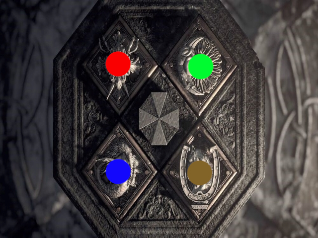

Once you've solved the puzzles of the Four Houses,
you will have all you need to make sense of this picture.
The lighthouses of old direct vessels towards its piers;
find the four "piers" nearest to the four images.
Figure out their numbers, and use them to find the final answer.